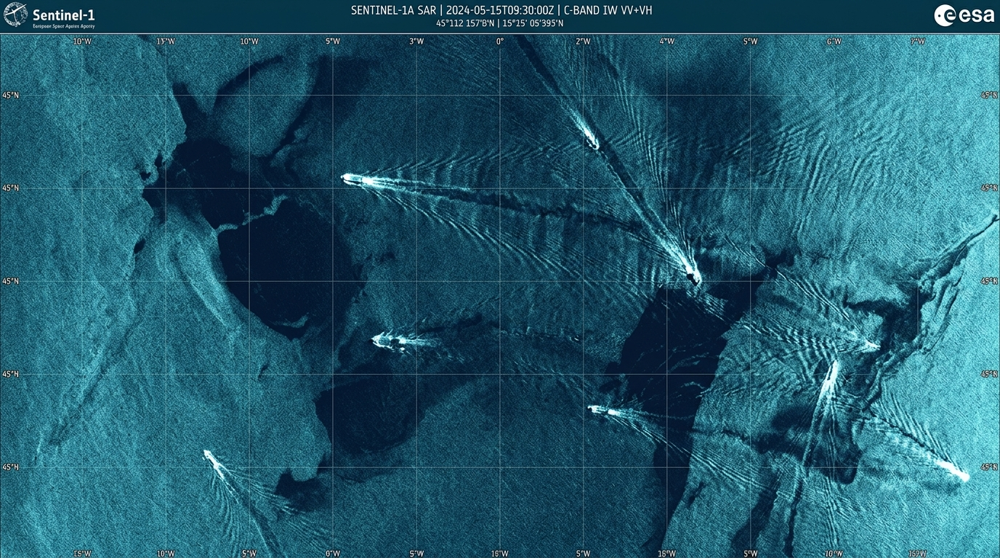

SpillSense
AI Ocean SAR & AIS Maritime Forensics
Detect the spill. Identify the ship.
Act in minutes, not weeks.
SpillSense autonomously intercepts orbital Synthetic Aperture Radar (SAR) backscatter, isolates petroleum slicks through heavy clouds and darkness, and cross-correlates hydrodynamic drift models against global AIS ship tracking to hold marine polluters accountable.
How SpillSense Operates
From orbital microwave backscatter to legal prosecution in four automated phases.
Satellite SAR Ingestion
Active microwave pulses penetrate 100% of cloud cover, dense monsoon storms, and nighttime darkness to scan ocean capillary roughness at 10m spatial resolution.
ALL-WEATHER ORBITAL SCANAI Slick Segmentation
Multi-scale neural network differentiates hydrocarbon damping from natural lookalikes (biogenic films, algal blooms, low-wind sea calm) using dual-pol VV/VH ratios.
0.02% FALSE POSITIVE RATEAIS Hydrodynamic Drift
Lagrangian reverse-particle physics backtrack ocean currents and windage to calculate the exact coordinate and timestamp of discharge, intersecting historical AIS vessel tracks.
LAGRANGIAN BACK-PROPAGATIONEvidentiary Dossier
Automated compilation of court-admissible legal packets including IMO registry, transponder blackout gaps, draft loss telemetry, and cryptographically hashed evidence.
MARPOL ANNEX I ADMISSIBLESpill Sense vs. Traditional Monitoring
Why coast guards and maritime environmental agencies are retiring optical patrols.
| Surveillance Capability | Spill Sense AI Platform | Traditional Aircraft & Coast Patrols |
|---|---|---|
| Time-to-Detection | ✓ Under 5 minutes | ✕ 3 to 14 days |
| Night & Cloud Penetration | ✓ 100% (SAR C/X-Band) | ✕ 0% (Visual/Optical only) |
| Dark Vessel Attribution | ✓ Automated Drift & AIS Correlation (94.8%) | ✕ Rare (< 12% culprit identified) |
| Monitoring Cost per 10,000 km² | ✓ $18 USD (Orbital Ingest) | ✕ $8,400 USD (Flight hours & crew) |
| Prosecutorial Chain of Custody | ✓ SHA-256 Hashed Evidence Dossier | ✕ Unstructured Pilot Photos |
Command Portal
Authenticate with Coast Guard or Marine Agency credentials.
